oTidalRoute
oTidalRoute uses tidal current GRIB files to generate Estimated Positions (EP) along a planned route.
Links
-
Source: Github Repository
-
Releases: Github Releases
-
Forum: oTidalRoute Plugin Thread
1. What and Why
Calculate routes showing estimated positions along a route in areas affected by tidal currents. Select the optimum departure time for the route.
2. Install
Download the plugin installer and run the installer .exe file from here (Windows):
Tidal current GRIB files can be downloaded from a number of websites. For a site with easy access try:
3. Standard actions
Open the toolbox and enable 'oTidalRoute'.
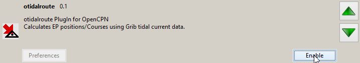
Apply/Ok and on the toolbar you will find the oTidalRoute icon.
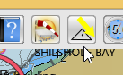
Because you need tidal current GRIB files it is probably better to start the Grib plugin at this stage.
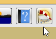
If the icon is not shown on the toolbar enable it using Options→Plugins and then start the Grib plugin.
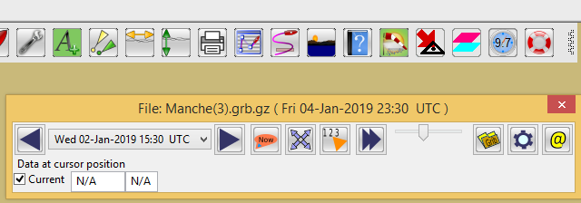
Start the oTidalRoute plugin.
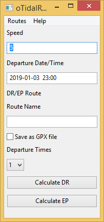
All the tools needed are now in place. Draw the proposed route on the chart.
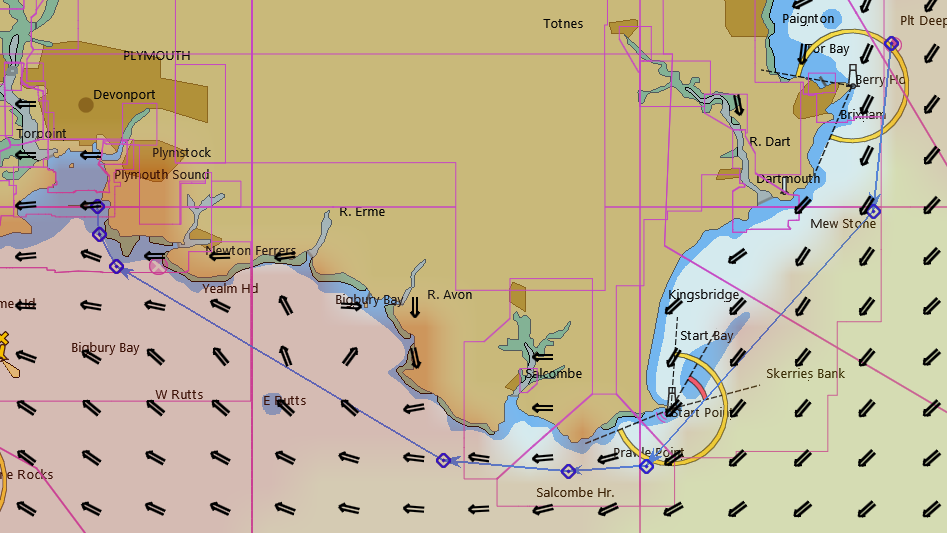
Make sure that the route passes through areas of the GRIB where current values are available. This means the route must fall within squares of the GRIB where there is a data point at each corner. If the cursor is moved into areas with only 3 data points the current direction/speed in the Grib plugin will show 'N/A'.
An example of where the example route had to be adjusted is here:
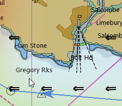
If the route had been closer to 'Gregory Rocks' it would not have passed through a 'square' of data points and the current data would not have been available.
The plugin needs a GPX file of the route to work with. Give the route a name and export it as a GPX file to a location where you can easily find it.
Returning to the oTidalRoute dialog enter the planned speed for the route. The departure time is entered by selecting a time from the Grib plugin. The tidal current data for that time covers a period from 30 minutes before to 30 minutes after the time shown in the Grib plugin. For this reason the departure time appearing in oTidalRoute will be 30 minutes before the Grib plugin time.
Enter the name for the output route, which will have the estimated positions (EP).
If you want a GPX file for the EP route tick the box. The route can be charted from the plugin so there is often no need for this file.
In order to produce a comparison of different departure times the number of these can be set with the drop-down. Initially set this as '1' to check the plugin works. The plugin dialog will then look like this:
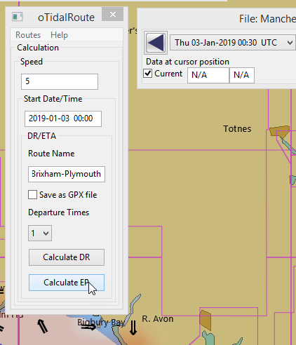
Press 'Calculate EP'!
A selection box opens to allow you to select the route GPX file you saved earlier.
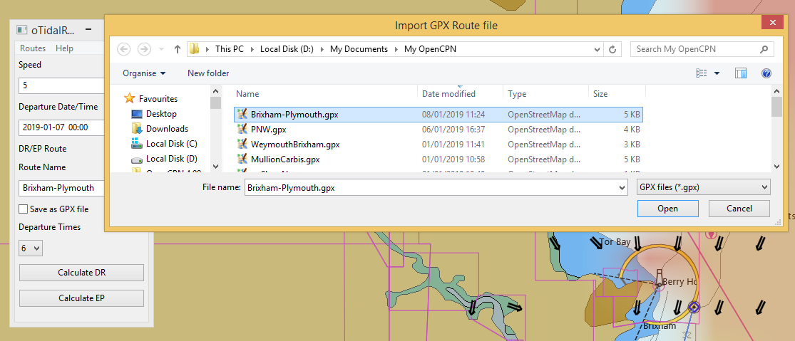
If you have decided to save a GPX file of the route with EPs a further selection dialog opens for the output file.
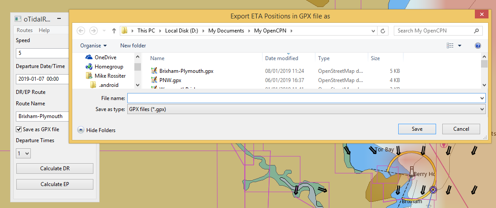
The calculation may fail.
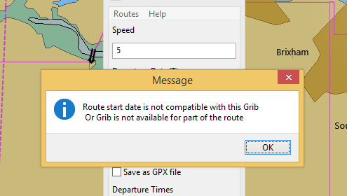
If this happens even if the route looks compatible with the GRIB try making a simple test route well away from land. If the plugin has worked you will get this message:
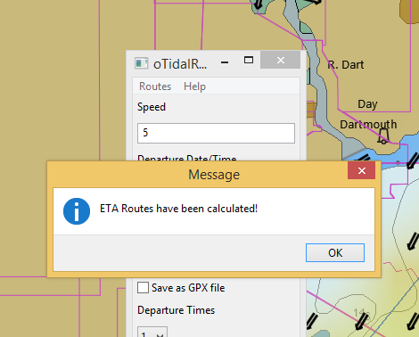
For a summary of the EP route select the menu option Routes→Summary.
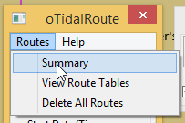 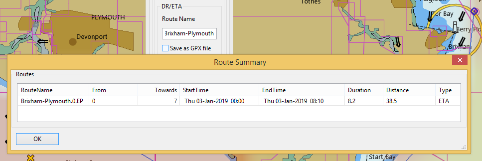
For a table showing distances/courses to steer/tidal current for each leg use Routes→Route Tables.
Select the route and press 'Route Table'.
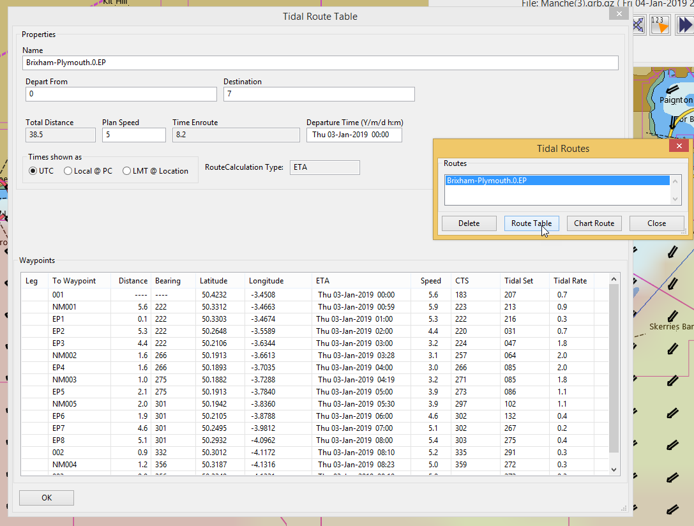
If the route needs to be plotted on the chart press 'Chart Route'.
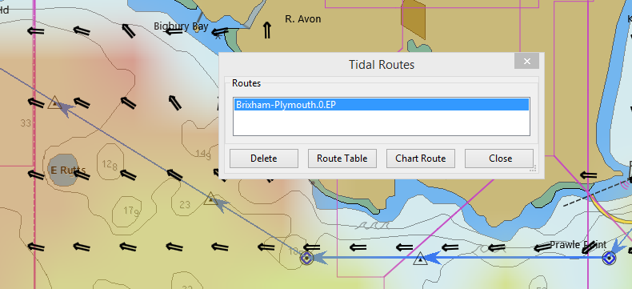
For choosing the optimum departure time use the drop-down to choose the number of departures. Then 'Calculate EP'. You will need to choose a new name for the route or delete the existing route.
After the calculation the summary shows each of the routes and the estimated time for each. The distance varies slightly due to rounding errors in the calculation.
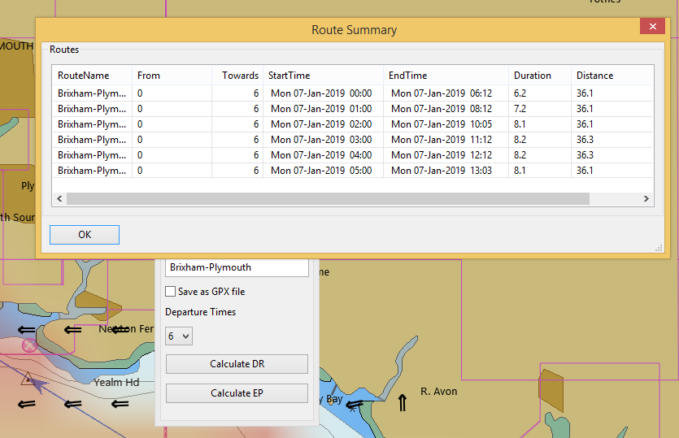